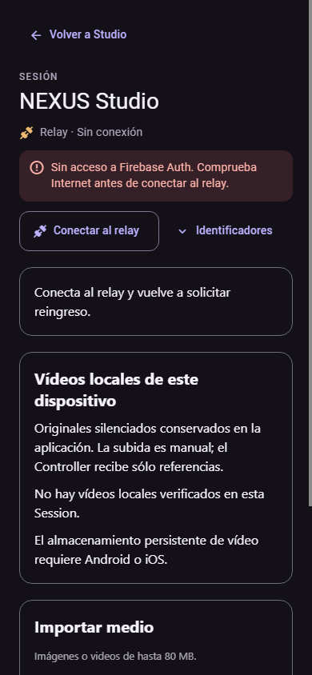

ETAPA 2A · COMPONENTES REALES · ESCENAS AISLADAS
Session: leer cada Node con claridad.
Se implementaron encabezado, filas Controller y presentación del editor de rol. Las escenas siguientes usan datos sintéticos, sin sesiones reales. No representan una implementación de 2B/2C ni prueban cámara, ACK real o guardado.
Informe y prueba del operador · Plan de Etapa 2 · Referencia A aprobada
Ruta real · sin Session confirmada
Captura de integración con servicios externos bloqueados. No es una sesión Controller real ni una admisión por el código de ejemplo.

feat/ui-polish · base 43d0d0b + cambios locales sin commit. ControllerTakePanel, NodeReadinessPanel y sus ciclos de vida permanecen intactos.